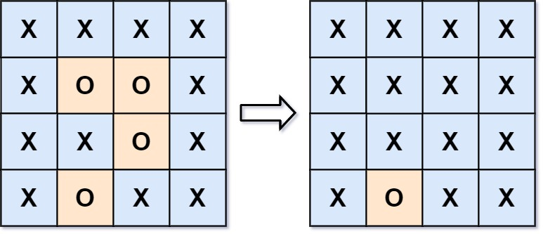

| Category | Difficulty | Likes | Dislikes |
|---|---|---|---|
| Algorithms | Medium | 9684 | 2195 |
array | depth-first-search | breadth-first-search | union-find | matrix
google | amazon | bloomberg | facebook | oracle | nutanix | microsoft | adobe | yahoo | apple | uber | tiktok
You are given an m x n matrix board containing letters 'X' and 'O', capture regions that are surrounded:
'O' cell.'X' cells if you can connect the region with 'X' cells and none of the region cells are on the edge of the board.To capture a surrounded region, replace all 'O's with 'X's in-place within the original board. You do not need to return anything.
Example 1:
Input: board = [["X","X","X","X"],["X","O","O","X"],["X","X","O","X"],["X","O","X","X"]]
Output: [["X","X","X","X"],["X","X","X","X"],["X","X","X","X"],["X","O","X","X"]]
Explanation:

In the above diagram, the bottom region is not captured because it is on the edge of the board and cannot be surrounded.
Example 2:
Input: board = [["X"]]
Output: [["X"]]
Constraints:
m == board.lengthn == board[i].length1 <= m, n <= 200board[i][j] is 'X' or 'O'.